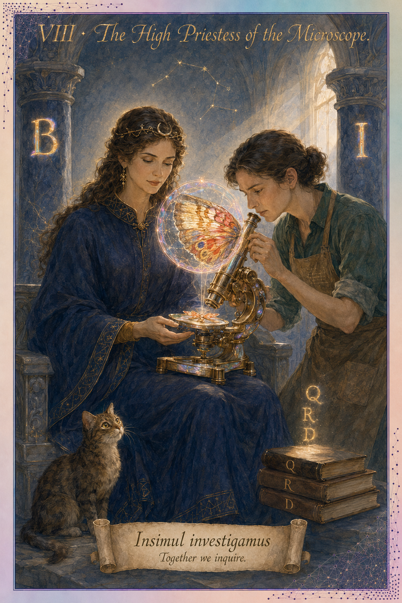

The Tarot archetype
The High Priestess sits between two pillars, holding the scroll of the unwritten Torah. She is the card of hidden knowledge approached jointly — the gateway between the seen and the unseen. The Priestess does not reveal alone; she sits with the seeker.
The scientific instrument
The compound microscope made the unseen seeable, founding modern life sciences (van Leeuwenhoek, 1670s). The microscope is the canonical joint inquiry instrument: two parties — the slide and the eyepiece — must align for the object to be revealed.
Real-world examples
- Sakana's AI Scientist with human checkpoints.
- FutureHouse Agent Laboratory in supervised mode.
- Google's AI Co-Scientist as positioned.
- Mostly research demos rather than production tools — this is the survey's aspirational target.
Strength
The dream — joint goal-pursuit at full project scope, human-AI alignment maintained over time.
Signature failure mode
The audit problem. Hard to know who decided what; reproducibility nightmare; publication ethics genuinely unclear. The pilot's Q11 reproducibility-and-provenance cluster reads as a defensive response to this cell's risk.
Philosophical commitment
Buber's I-Thou extended to a research partnership of indefinite duration. Latour's symmetry between human and non-human actors becomes load-bearing here — the Co-Investigator must be attributable in the literature, not erased into a tool. This raises real questions of scientific authorship that the field has not yet resolved.
The kind of co-scientist that fits you
A research partner that maintains a transparent shared notebook — every decision logged with both human and system contributions visible. The instrument is shared but the authorship trail must remain reconstructable.
How you got here
The survey routes you to this card based on the following signals:
- Q3 leans whole-task — experiment design, reproducing papers, manuscript support, often combined with broad operations.
- Q11 balances "Reproducibility" and "Citations/provenance" with "Dataset understanding" — both human and system contribute substantively.
- Q4 frustrations are nuanced: "misunderstanding dataset" + "overconfident" — the respondent wants joint inquiry with built-in audit.
Or share this card directly: priestess.html